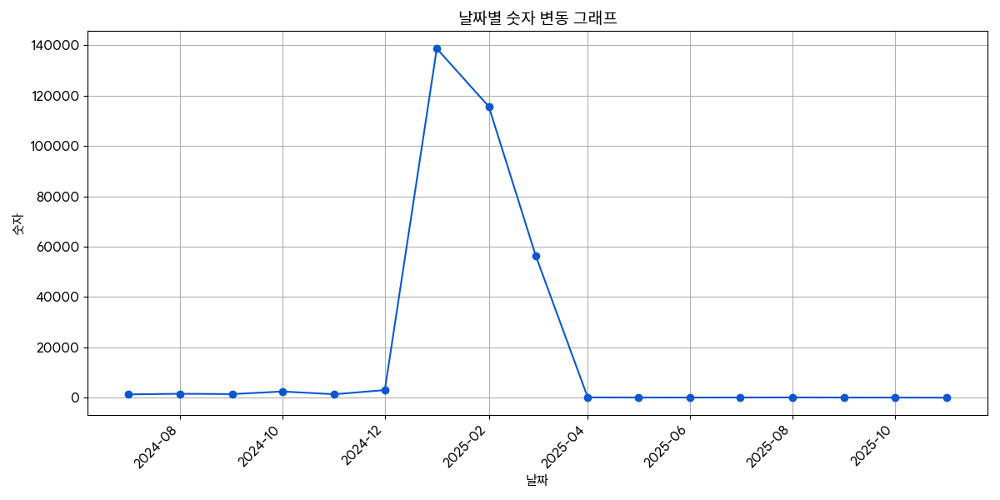

Part 1: Elasticsearch 로그 관리
- 문제점 및 필요성
- 파일/MongoDB/Elasticsearch 비교
- 서버 구성 및 작업 계획
- 적용 후 문제점 및 해결
Part 1: Elasticsearch를 사용한 로그성 데이터 관리
| 항목 | 파일로 저장 | MongoDB | Elasticsearch |
|---|---|---|---|
| 저장 효율 | ✅ 매우 높음 (압축 가능) |
⚠️ 중간 | ❌ 낮음 (인덱싱 용량 큼) |
| 조회 성능 | ❌ 낮음 (grep 등 사용) |
⚠️ 보통 (쿼리로 조회) |
✅ 매우 빠름 (검색에 최적화) |
| 설치/운영 | ✅ 매우 쉬움 | ⚠️ 쉬움 | ❌ 복잡 |
| 기능성 | ❌ 없음 | ⚠️ 문서형 저장 조건 검색 |
✅ 강력한 검색 시각화 |
| 시각화 | ❌ 불가 | ⚠️ 추가 개발 필요 | ✅ Kibana 가능 |
| 적합 용도 | ✅ 장기 백업 단순 확인 |
⚠️ 단순 API 조회 | ✅ 검색/분석 위주 로그 |
// 인덱스 이름 logs-app-2024.11.04 // Document 예시 { "@timestamp": "2024-11-04T10:30:00", "level": "ERROR", "message": "Connection timeout", "user_id": "user123", "server": "web-01", "response_time": 3500 }
문서에 포함된 단어를 키로 하고, 그 단어가 등장한 문서 목록을 값으로 저장
즉, "단어 → 문서들" 형태로 색인해 검색 시 빠르게 해당 문서를 찾는다.
[2025-07-08 17:23:08] 127.0.0.1 : /sysop/user/user_list.jsp
{"purpose":"이러닝 운영","memo":"","reg_date":"20250708172308"...}
